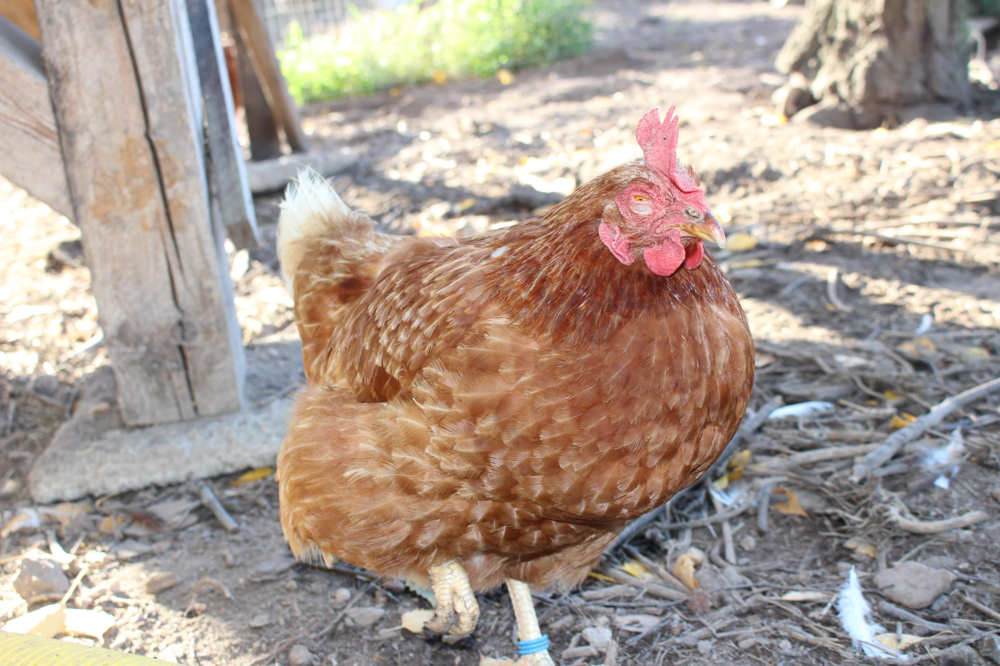
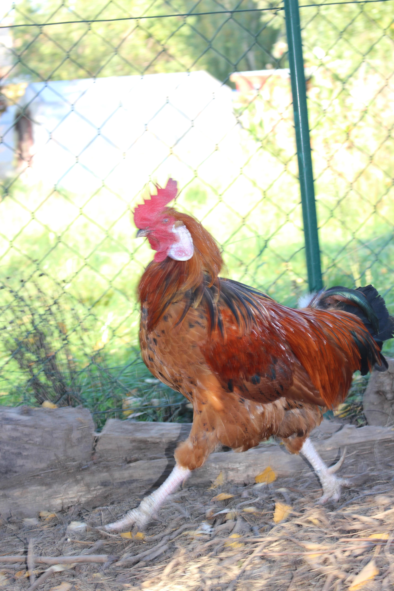
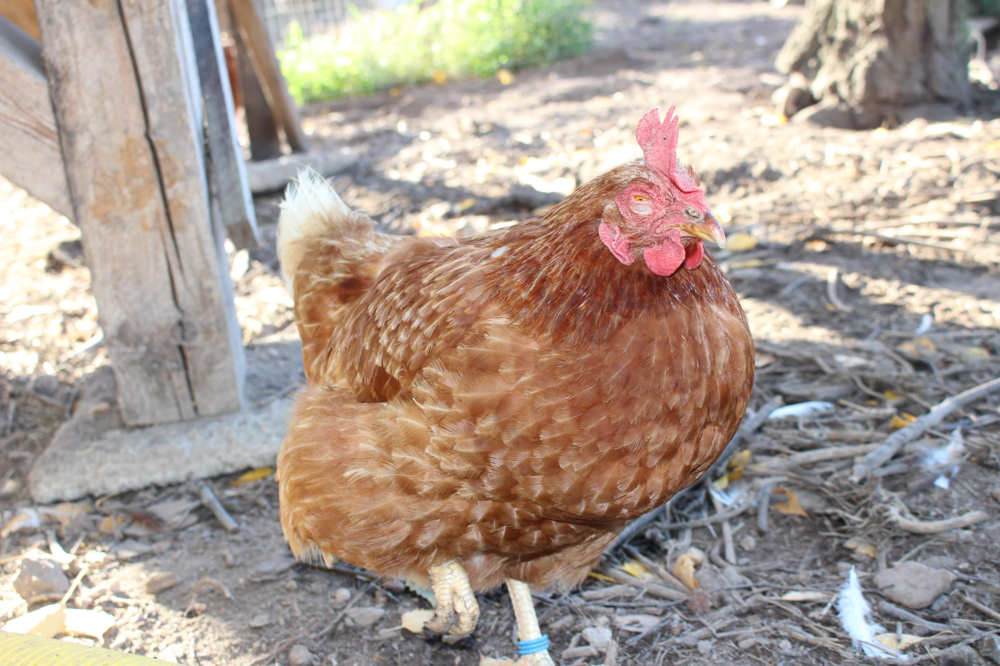
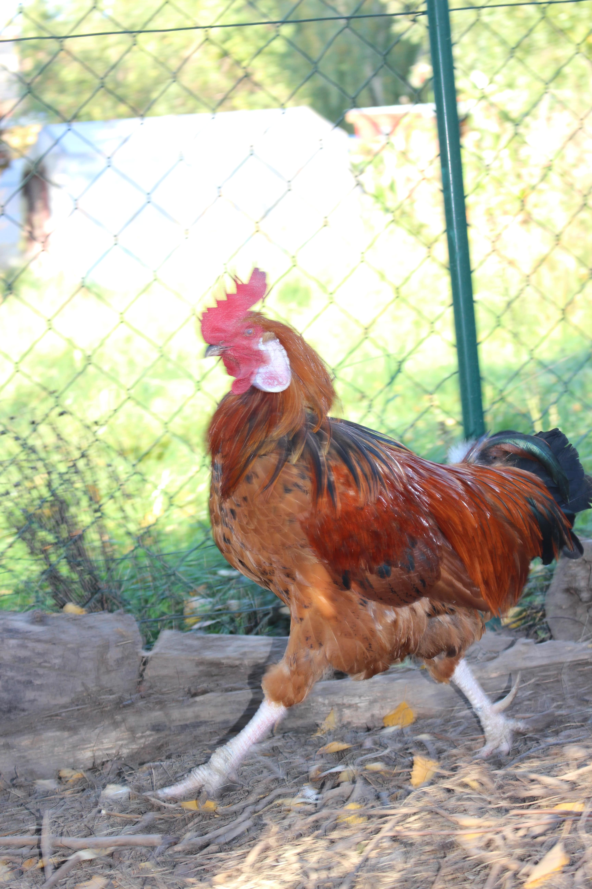
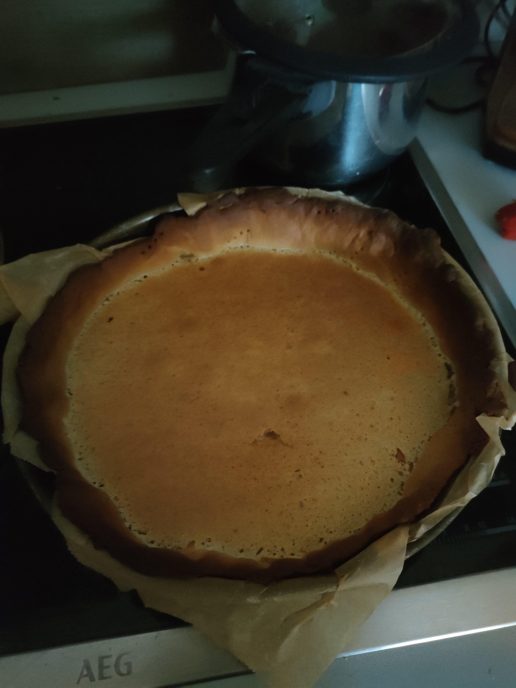
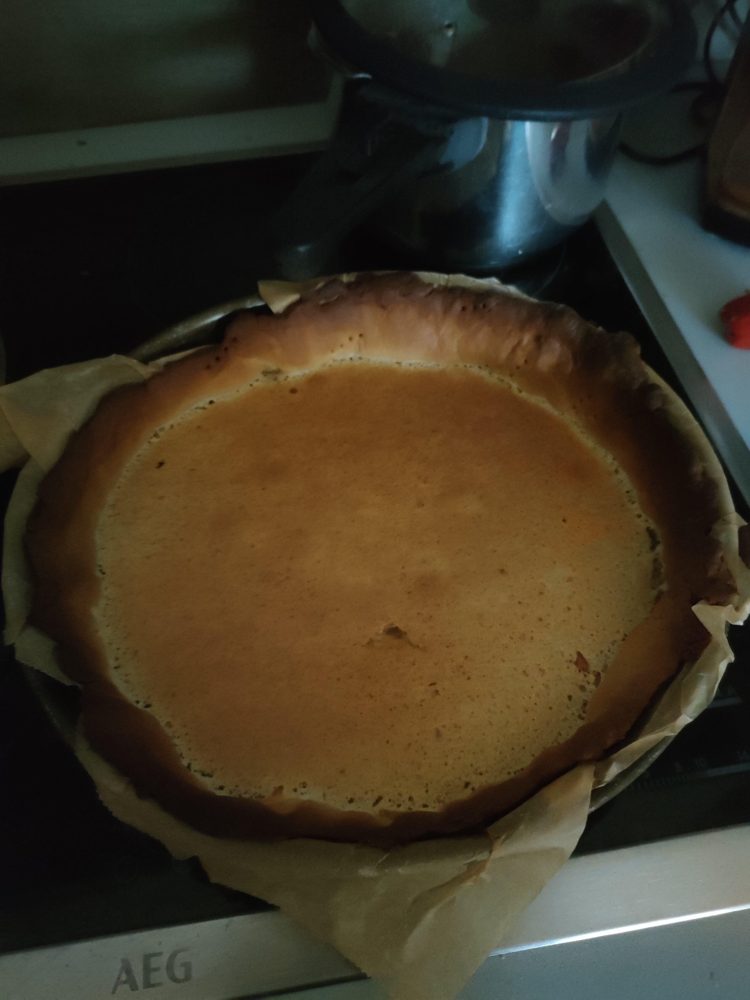
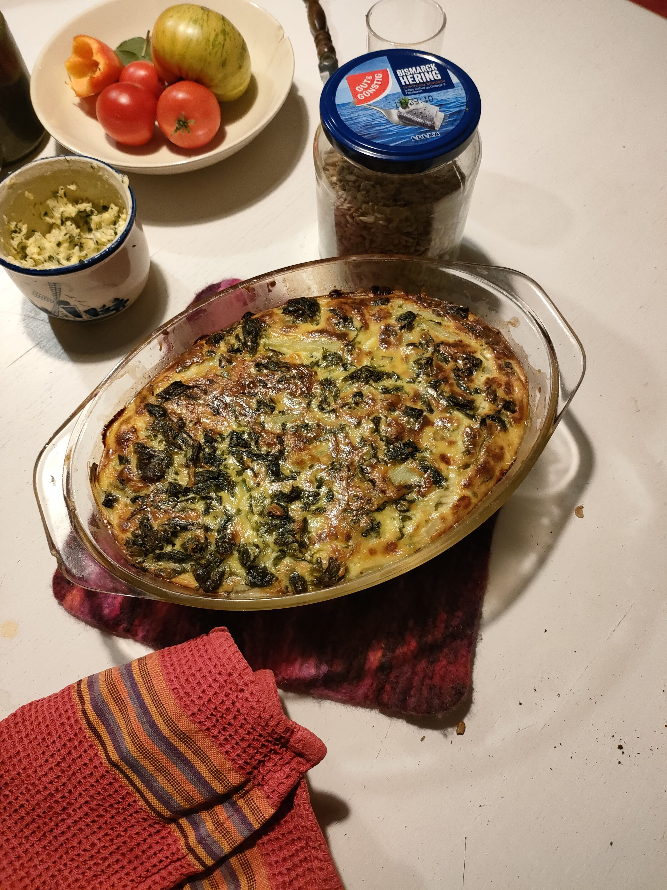
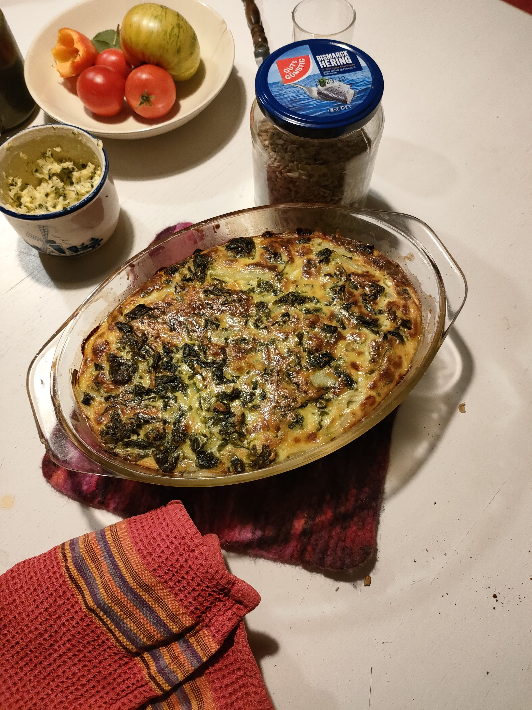

Jeudi 2 octobre
54 pommes
Je suis arrivée chez Christine à 19 h 30, soit 3 h après l’heure prévue de base,
le combo trains allemands et français est exceptionnel, chacun de mes 4 trains a été en retard.
J’ai rencontré Li Jing, une amie chinoise de Christine, et Emri, le chien.
Li Jing a fait un workaway chez Christine il y a quelques années, et elle est revenue
travailler quelques temps ici en profitant du calme de la campagne. Elle fait du design industriel.
J’ai découvert ma chambre, très spacieuse, mais pleine d’araignées…

Vendredi 3 octobre
Le 3 octobre, c’est la journée de l’Unité allemande ! C’est la fête nationale, et ils
célèbrent la réunification des deux Allemagnes. C’est un jour férié donc Christine m’a
donné peu de travail à faire.
Ma première mission du Workaway a été de m’occuper de la serre des tomates. J’ai coupé
les parties malades, et j’ai enlevé les tomates qui ne feraient plus de nouvelles tomates.
J’ai arrosé la serre et la serre des poivrons, et j’ai récolté tout ce qui était mûr.
Le soir, on a mangé avec un couple d’amis de Christine et son fils Rasmus. Li Jing avait préparé un hot pot chinois, c’était la première fois que j’y goûtais, c’était délicieux !
Il y avait plein de trucs que je ne connaissais pas (du tofu en boules, des légumes inconnus,
des nouilles transparentes à base de patate douce)...
On a parlé un peu de la réunification. Le village appartenait à l’Allemagne de l’Est,
et Christine avait des photos de sa maison, toute grise à cette époque-là.
Et aussi mon shampoing s’est renversé dans ma trousse de toilette :(
Samedi 4 et
Dimanche 5 octobre
Je n'ai pas fait grand-chose, c’était le weekend. J’ai surtout fait de la chasse aux araignées, puis j’ai échangé de chambre avec Li Jing, qui dormait sur la mezzanine d’un atelier tout neuf, donc sans trop d’araignées. Merci Li Jing.

Lundi 6 octobre
8 pommes
Première journée de travail ! J’ai dépoussiéré des oignons (je n’avais jamais
réfléchi à l’existence de ce genre de tâche avant).
Ensuite, on a nettoyé la maison des poules de fond en comble. On a remarqué
qu’il y avait des poux rouges, un parasite pour les poules sur leurs meubles en bois,
donc on a sorti les armes. Christine est allée acheter du poison en spray
et on a brûlé au chalumeau les agglomérats des petits vampires.
J’ai ramassé des pommes, et j’ai fait une tarte tatin (pâte à tarte maison attention)
avec les plus sucrées. J’ai aussi nettoyé le déshydrateur pour prochainement faire
des chips de pommes.
Pour le repas du soir, j’ai nettoyé et préparé pour le four 10 000 minuscules pommes
de terre. Et j’ai fait une mayonnaise maison. À la cuillère, parce que je suis trop forte.


Mardi 7 octobre
4 pommes
J’ai encore nettoyé des oignons, je n’avais pas fini. J’ai préparé des pommes
pour en faire des chips. J’ai lancé le déshydrateur pour 10 h de séchage.
En début d’après-midi, j’ai aidé Li Jing à traduire en français un site web
qu’elle est en train de concevoir pour une marque de lampes en papier pliant.


Mercredi 8 octobre
15 pommes
J’ai enlevé les pommes du déshydrateur, ou plutôt je les ai raclées.
Je ne les avais pas retournées à la mi-temps, donc elles avaient attaché et
ça a été compliqué de nettoyer l’appareil. Le résultat était plutôt bon,
mais pas croustillant.
J’ai fait de la compote de pommes aussi (3 kg). Christine m’a dit de mettre
les pots de compote dans une espèce de marmite avec de l’eau qui chauffe pendant
longtemps, un peu comme un stérilisateur mais pas juste pour les pots vides.
Sauf que la machine ne s’est pas arrêtée à temps, la compote a pris une drole de couleur.
J’ai peur d’avoir fait de l’alcool mais Christine était quand même contente.
L'après-midi, j’ai nettoyé un frigo.


Jeudi 9 octobre
9 pommes
Christine louait 2 appartements dans l’enceinte de sa ferme, mais ses deux locataires
sont partis en même temps, l’un à l'hôpital et l’autre en maison de retraite.
Donc elle a engagé des gens pour l’aider à vider les appartements. Pendant ce temps-là,
j'ai préparé une sorte de minestrone avec encore une fois 10 000 petites patates,
et plein de légumes et d’épices, pour tout le monde. J'ai aussi fait deux tartes aux pommes.
L’après-midi, j’ai nettoyé la cuisine parce que je ne sais pas cuisiner proprement,
et j’ai taillé un rosier, avec grand soin.
Le soir, Christine m’a emmenée aux thermes. Le mot Bad devant Bad Belzig signifie
que c’est une ville thermale, en Allemagne. Il y avait notamment un bassin extérieur,
qui était éclairé dans la nuit, et un très grand bassin dans une salle isolée avec
de l’eau thermale très concentrée en sel, où on pouvait se laisser flotter pendant
20 minutes avec un peu de musique. Il n’y avait presque personne donc c’était très calme.


Vendredi 10 octobre
J'ai coupé des piments pour en faire des conserves avec du sel et du vinaigre.
Christine adore les piments, elle en met dans tout ce qu’elle cuisine. Je pense,
très humblement, que c’est trop.
J'ai encore taillé des rosiers, avec beaucoup d’application toujours.
J'ai aussi récolté des pommes de terre, c’était beaucoup plus long que ce que je pensais.
Il fallait retourner chaque motte de la parcelle de terre, c’était comme un cache cache,
mais pas très amusant. Puis, pour me venger, j’en ai sauté à la poêle pour le dîner.

Samedi 11 octobre
J'ai coupé du chou chinois pour en faire du kimchi. C’est un peu le même principe que
les conserves de piments. Christine m’a dit de mettre des piments avec le chou, d’ailleurs.
Ce n’était pas nécessaire à mon avis.
On est allées à une sorte de friperie solidaire gratuite. C’était très bien, mais
ça fermait à 15 h donc on a été mises dehors. On est alors allées visiter Bad Belzig,
il y avait un marché écologique, mais encore une fois, c’était la fin.
Christine m’a ensuite emmené voir une exposition artistique, dans un château.
L’artiste Susanne Kraisser, était présente, Christine lui a longtemps parlé.
Elle sculpte des figurines de femme, en bronze.
Le soir, on est allées acheter des poules et un coq chez des gens du village.
Honnêtement, ça ressemblait beaucoup à un enlèvement, on y est allées en pleine nuit,
on les a attrapés et mis dans des cartons dans la voiture.
 



Dimanche 12 octobre
Lundi 13 octobre
10 pommes
J’ai désherbé une parcelle de terre, que j’ai ensuite recouverte de compost filtré.
J’ai utilisé un drôle d’outil, qu’on va appeler la tourniflette, pour mélanger la terre
et le compost. Je ne savais pas comment utiliser la tourniflette et je ne sais toujours pas.
Puis j’ai planté l’ail, de façon plus ou moins régulière. J’ai continué à filtrer du compost,
c'est-à-dire à le tamiser pour retirer les cailloux, branches et déchets plastiques.
J’ai ensuite fait 2 kg de compote, parce que c’est très bon.


Mardi 14 octobre
3 pommes
J’ai fabriqué des allumes-feu en fondant des anciennes bougies et en versant la
cire et de la sciure dans des boîtes d’œufs. J’ai tout sali. La cire, c’est compliqué à enlever.
Ensuite, j’ai ramassé une cagette de pommes, et j’ai fait un gâteau aux pommes
selon une recette allemande de Christine. Je dirais que je préfère les recettes françaises.
Ou peut-être que j’ai mal suivi la recette.

 

Mercredi 15 octobre
J’ai nettoyé à fond le sol de plusieurs pièces, au balai puis à la serpillière.
La rampe d’escalier de l’atelier avait été tachée par des doigts plein de cendre
(pas les miens), donc je l’ai poncée puis je l’ai huilée à la térébenthine.
Ensuite, j’ai cuisiné un gratin de blettes. Le résultat était très bon,
mais c’est beaucoup trop long de préparer les blettes. J’y ai passé 2-3 h
pour seulement 3 portions au final.
 

Jeudi 16 octobre
Je suis repartie en train pour passer quelques jours en France, à Mâcon.
Je me suis rendue compte à ce moment-là que, même si j’avais passé un très
bon séjour chez Christine, j’étais fatiguée et un peu soulagée de partir.
Les petites araignées et les guêpes ne m’ont pas vraiment laissé de répit la nuit,
même sur la mezzanine toute neuve.
Le train Berlin Paris était bien pratique, mais très long (8 h d’un coup).